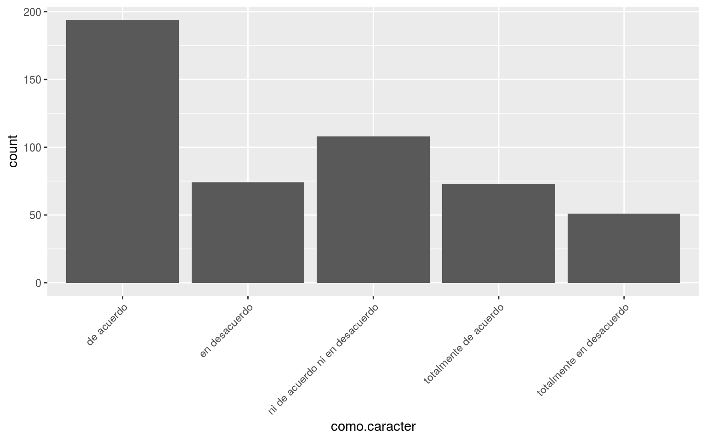

- 1 Introducción
- 2 R: lo básico
- 3 Estructuras y funciones
- 4 Objetos
- 5 Funciones
- 6 Estructuras de datos
- 7 Estructuras de datos fuera de R-básico
- 8 Objetos importantes
- 9 Estructuras de control
- 10 Material adicional
- 11 Vectorización, la familia apply y otros
- 12 Herramientas básicas para un proyecto de datos
- 13 Conclusión
- Apéndices
- A Markdown
- B Packrat
- C Formatos
- Bibliografía
6.5 Factores (factor)
Los factores son otro tipo de vectores pero que ayuda a representar datos del tipo categórico u ordinal, es decir, cuando los posibles valores de la variable tipo caracter es limitado. Por ejemplo, son útiles cuando tenemos una variable como “sexo” donde, al menos por ahora, legalmente solo puede tomar los valores hombre o mujer. Si, en cambio, se tiene un vector de nombres es conveniente dejarlo como caracter.
Un factor se guarda como un enteros pero con etiquetas encima tal que cada entero corresponde a una etiqueta (label).
y <- c("no", "si", "si", "no")
class(y)## [1] "character"# Debemos pedirle explícitamente que lo guarde como factor
x <- factor(c("no", "si", "si", "no"))
x## [1] no si si no
## Levels: no siAl imprimir el objeto, se observa como los niveles fueron asignados. Éstos corresponden al número de valores únicos en el vector de caracter y se asignan en orden alfabético los valores.
Los factores se despliegan como si fueran vectores tipo caracter y algunas operaciones son análogas:
table(x)## x
## no si
## 2 2La ganancia es que son más rápidas. Aunque a veces los factores se comportan como vectores tipo caracter pero debemos recordar que por debajo son enteros y tenemos que ser cuidadosos si los tratamos como caracteres.
Supongamos por ejemplo que tenemos un factor con valores 5, 6 o 7. Lo tenemos guardado como factor.
ej <- factor(c("7", "6", "5", "7", "5", "7", "6", "5", "5", "6","5"))
ej## [1] 7 6 5 7 5 7 6 5 5 6 5
## Levels: 5 6 7Dado que los valores son números, conceptualmente tiene sentido operarlos como tal:
as.integer(ej)## [1] 3 2 1 3 1 3 2 1 1 2 1Obtuvimos los enteros a los que las etiquetas originales habían sido asignados. Para recuperar los valores originales, debemos hacer
as.integer(as.character(ej))## [1] 7 6 5 7 5 7 6 5 5 6 5Algunos métodos que están hechos para caracteres coercionan un factor a caracter mientras que otros arrojan un error. Si usas métodos de caracteres, lo mejor es “castear” (coerción explícita) a caracter tu factor utilizando as.character(mifactor). De esta manera se pierden algunas cosas pero te aseguras que las cosas funcionen como deben.
summary(x)## no si
## 2 2summary(as.character(x))## Length Class Mode
## 4 character characterLos factores pueden incluir únicamente los niveles con los que fueron definidos. Por esa razón, la unión de dos factores ddeclarados en forma independiente puede dar resultados no deseados.
y <- factor(c("si", "no", "tal vez"))
c(x, y)## [1] 1 2 2 1 2 1 3class(c(x, y))## [1] "integer"No es posible entonces recuperar el valor de las etiquetas. R hizo las operaciones posibles pero hubo pérdida de información. Para concatenar dos factores correctamente, es necesario:
factor(c(as.character(x), as.character(y)))## [1] no si si no si no tal vez
## Levels: no si tal vezEn general, se recomienda incluir el valor de u nnivel posible, independientemente de si se tiene o no esa respuesta. Sin embargo, el problema al concatenar persiste.
x <- factor(c("no", "si", "si", "no"), levels = c("no", "si", "tal vez"))
c(x, "tal vez")## [1] "1" "2" "2" "1" "tal vez"Para datos ordinales como las respuestas en una pregunta de encuesta con escala likert los factores son también objetos útiles.
Veamos un ejemplo en donde tenemos 500 respuestas a la pregunta “este tutorial es muy útil”:
set.seed(2887)
respuestas <- sample(x = c(1:5), size = 500, replace = T
, prob = c(0.1, 0.15, 0.2, 0.4, 0.15))
y <- factor(
x = respuestas,
levels = c("1", "2", "3", "4", "5"),
labels = c("totalmente en desacuerdo", "en desacuerdo"
, "ni de acuerdo ni en desacuerdo"
, "de acuerdo", "totalmente de acuerdo"),
ordered = T)
table(y)## y
## totalmente en desacuerdo en desacuerdo
## 51 74
## ni de acuerdo ni en desacuerdo de acuerdo
## 108 194
## totalmente de acuerdo
## 73Nota como la tabla está ordenada de izquierda a derecha con la respuesta más en desacuerdo a la más de acuerdo pues introducimos la opción ordered = T en la definición del factor debido a que las respuestas están en una escala ordinal.
table(y)## y
## totalmente en desacuerdo en desacuerdo
## 51 74
## ni de acuerdo ni en desacuerdo de acuerdo
## 108 194
## totalmente de acuerdo
## 73Por último, al utilizar factores (y más aún, declarar un orden cuando es conceptualmente pertinente) es más fácil visualizar correctamente los datos con menor desgaste. Si graficamos las respuestas como caracter recibimos:
library(ggplot2)
df <- data.frame(como.caracter = as.character(y), como.factor = y)
ggplot(df, aes(x = como.caracter)) + geom_bar() +
theme(axis.text.x = element_text(angle = 45, hjust = 1))
Si utilizamos el factor ordenado obtenemos:
ggplot(df, aes(x = como.factor)) + geom_bar() +
theme(axis.text.x = element_text(angle = 45, hjust = 1))